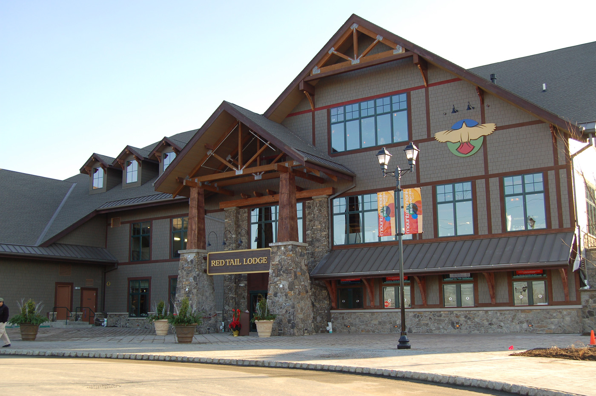
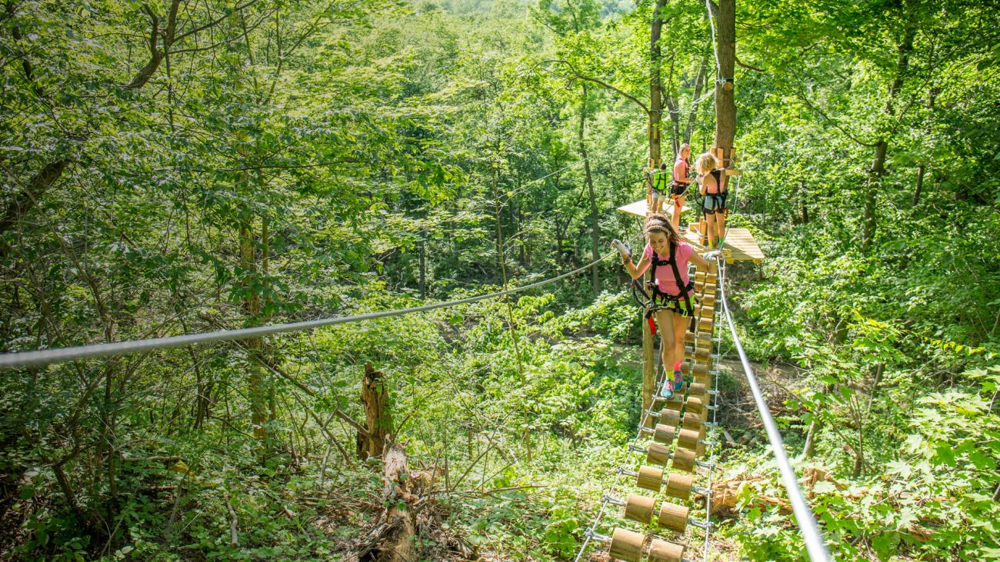
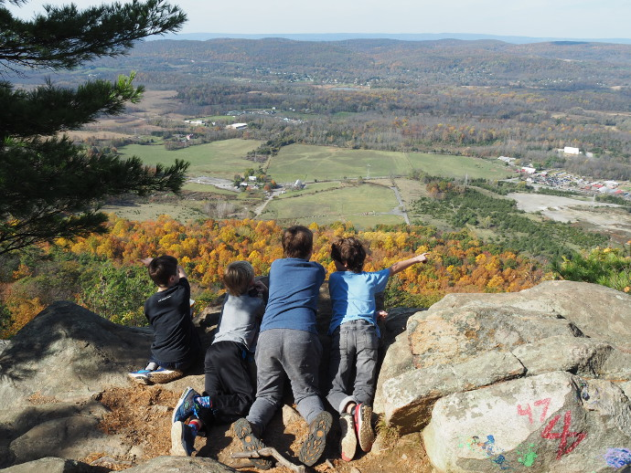
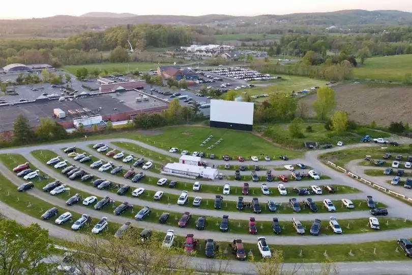
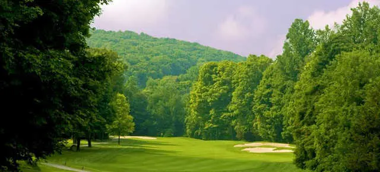
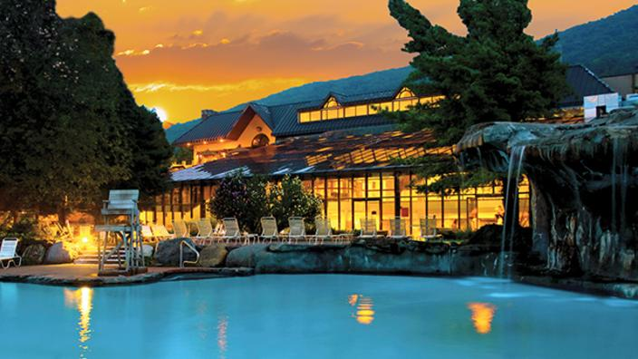

| Attractions |
Addresses | Phone Number | Pictures | Description |
Mountain Creek
|
200 NJ-94, Vernon Township, NJ 07462 | (973)827-2000 |  | A versatile all-season resort nestled in Vernon Township, New Jersey, offering skiing, water parks, golf, and more amidst the beautiful Kittatinny Mountains. |
Treescape Aerial Adventure Park
|
414 County Rd 517, Vernon Township, NJ 07462 | (862)801-7028 |  | Treescape Aerial Adventure Park offers thrilling treetop obstacle courses, zip lines, and canopy adventures, all set in a picturesque forest setting. |
Stairway To Heaven
|
443 Vernon Warwick Rd, Vernon Township, NJ 07462 | None Given |  | The "Stairway to Heaven" hike trail in Vernon Township, New Jersey, is a famous and challenging route known for its scenic views. |
Warwick Drive-In Theater
|
5 Warwick Turnpike, Warwick, NY 10990 | (845)986-4440 |  | The Warwick Drive-In Theater is a nostalgic outdoor movie theater in Warwick, New York, offering a unique cinematic experience where visitors can watch films from the comfort of their cars. |
Minerals Golf Club
| 2 Chamonix Dr, Vernon Township, NJ 07462 | (844)281-9548 |  | Minerals Golf Club is a scenic golf course located in Vernon Township, New Jersey, offering golf enthusiasts an enjoyable and challenging experience amidst beautiful natural surroundings./td>
|
Crystal Springs Resort
|
1 Wild Turkey Way, Hamburg, NJ 07419 | (973)862-4351 |  | Crystal Springs Resort is a luxurious resort located in Sussex County, New Jersey, known for its world-class golf courses, fine dining, spa facilities, pool, gym, and stunning mountainous landscapes. |